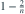
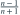

从  独立抽取
独立抽取  个观测。用
个观测。用 ![[X_{(1)},X_{(n)}]](../practice/math/3fada2f680b520b35e9f.svg) 作为
作为  的区间，覆盖率为？
的区间，覆盖率为？
独立抽取 个观测。用 作为 的区间，覆盖率为？- A
- B

- C

- D
我已思考，展开答案与解析
正确答案：D
- 未覆盖均值仅有“全部观测小于 ”或“全部观测大于 ”两种互斥情形。
- 正态分布关于 对称，两事件概率均为 ，因此覆盖率为 。
易错提醒需要扣除均值落在区间两侧的两种失覆盖情形。
JYSG · 432精选 · 册内复旦大学432·2020年·七；PDF第36页（印刷页34）
原大题拆解